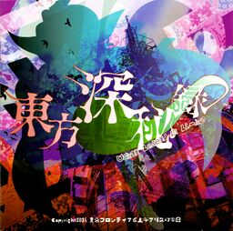

- Welcome to Touhou Wiki!
- Please register to edit. For assistance, check in with our Discord server or IRC channel.
Urban Legend in Limbo
Urban Legend in Limbo | |
|---|---|
|
 | |
| Developer | |
| Publisher | |
| Released |
Original version: |
| Genre |
Competitive Fighting Game |
| Platforms | |
| Requirements |
Windows:
PlayStation 4:
|
Touhou
A PlayStation 4 version was released after a year since its initial release, as part of Play, Doujin!. The PlayStation 4 version features Reisen Udongein Inaba as an exclusive character with her own story following the events after Legacy of Lunatic Kingdom. This marks the first official Touhou game to be released on consoles.
Contents
Gameplay[edit]
Concept[edit]
The game features a similar style and gameplay to the previous fighter Hopeless Masquerade. One exception is the use of Moe Harukawa, artist of Forbidden Scrollery, as the game's portrait artist. She replaces longtime artist alphes, who previously served as the artist on all of Touhou's fighting games. With this, a recurring theme in the game is using manga-style graphics, where each introduction to an opponent shows them drawn in a manga-style way.
Name[edit]
Before its first announcement with Twilight Frontier, there were only English words in its title. An "urban legend" refers to a modern folklore story, usually false, but believed by many regardless. "Limbo" in Catholic theology is an idea that there exists a separate, less "damning" afterlife for those who died in the friendship of God but still in original sin because Jesus had not made their entrance into heaven possible yet. The concept is controversial and is not an official doctrine of Catholicism. The word itself can also be more generally used to mean up-in-the-air or unfinished, as in the phrase "in limbo."
Story[edit]
Strange rumors are circulating in the Human Village.
"A dog with a human's face was rummaging in the compost pile."
"Somebody saw an old woman selling humans' feet."
These pointless rumors have exploded, and driven the children into fear. Unlike the youkai whose natural purpose is to attack humans, these rumors are both unsettling and impossible to discern the truth underneath. Since there were no real victims, the adults have come to think of them as merely children's silly talks.
Of course, the girls are not afraid. They know these to be the outside world's "urban legends" (made-up stories).
Urban legends have an interesting property. As the circulating rumors change, the anomalies will change correspondingly.
Reimu and company have assumed the rumors that fit them, and treat the anomalies as their playthings. As long as one can control the rumors without being afraid, the manifested anomalies can be rendered harmless. More than that, they can be turned into powers of one's own. The girls thought of controlling the urban legends by themselves as a necessary measure for keeping people from harm.
This had indeed been true. Until one night...
Music[edit]
There is a total of 30 tracks in the game. Unlike the previous fighters that had U2 Akiyama and ZUN for the music, this time other composers from different doujin groups come and made an official contribution, mainly to re-arrange characters' themes from previous Touhou games. One notable use of instrument amongst these arrangers is the guitar. To add to this, U2 (with JUN providing the violin) also provided music, mainly original themes, and ZUN created two new themes; one called "Battlefield of the Flower Threshold" as Kasen Ibaraki's theme and "Last Occultism ~ Esotericist of the Present World" as Sumireko Usami's. Notably, Reimu Hakurei's theme is an arrangement of "Dichromatic Lotus Butterfly ~ Red and White" from Dolls in Pseudo Paradise, itself coming from Shuusou Gyoku.
Unlike other fighters as well, the main scenarios don't use character themes; instead, there are new themes that are fixed specifically for these scenarios (listed under "Story Mode Battle Theme" in the link).
Press[edit]
The game was announced by ZUN on November 16th, 2014, at Digital Game Expo 2014 alongside Danmaku Amanojaku Gold Rush. Cards were handed out featuring Marisa Kirisame on a cover with references to Japanese urban myths in the background with art by Moe Harukawa, along with the text "Get your hands on the Occult Ball!"
On December 22nd, 2014, ZUN tweeted the proper announcement of the game, and linked to Twilight Frontier's new website for Touhou 14.5, thus also announcing the newest Team Shanghai Alice and Tasofro collaboration.
A trial version was released on December 29, 2014 during the Comiket 87.
On April 11th, 2015, Tasofro announced that the game will be released on May 10th, 2015, at Reitaisai 12, and revealed Fujiwara no Mokou and Shinmyoumaru Sukuna as playable characters.
On February 6, 2016 during the Nikenme Radio stream, ZUN, alongside with Unabara Iruka, confirmed a PlayStation 4 release of the game with additional content.
On May 9, 2016, a trailer for the PlayStation 4 version is released with the confirmation of the new returning character, Reisen Udongein Inaba, with her story being said to continue after the events of Legacy of Lunatic Kingdom.
On September 2, 2016, more information about the PlayStation 4 port was given. It is revealed that Reisen's theme is to be remixed by BeatMARIO. A release date of December 8, 2016 is confirmed for Japan and first print copies will include a new soundtrack for the game. HORI announced alongside the release of Urban Legend in Limbo themed Real Arcade PRO arcade sticks with the Reimu themed version being exclusively available in Amazon Japan while the Marisa themed version will be exclusive in HORI's online store at the price of ¥16,980 each.
Gallery[edit]

Cards handed out featuring Marisa Kirisame
HORI's Reimu-themed Real Arcade PRO arcade stick (Amazon Japan)
HORI's Marisa-themed Real Arcade PRO arcade stick (HORI Online Store)
Artwork for the PlayStation 4 version
Reveal image of Reisen Udongein Inaba for the PlayStation 4 version
Demo Disc
Game Disc
Box Arts[edit]

Cover of the PC version
Cover of the PS4 version
Trailers[edit]
Tokyo Game Show 2016 (PlayStation 4) Trailer:
Differences from the PlayStation 4 version[edit]
As ZUN stated from an interview, the PlayStation 4 version of the game will not be a direct port and will receive exclusive features.
- Reisen Udongein Inaba is a playable character exclusive to the PS4 version.
- Reisen occupies the "Random character" in the Character Select screen.
- Extra mode is added, which takes place as Reisen's story.
- The Extra Story mode also acts as a prologue to Antinomy of Common Flowers. It occurs some time after Legacy of Lunatic Kingdom.
- Eientei is present in the game as a new stage.
- The PS4 version has 1080p screen resolution support as opposed to the PC version's which only supports up to 720p.
- New music tracks were remixed and added.
- New modes were added.
- New Original Soundtrack CD was released alongside the first copies of the game.
Additional Information[edit]
- This game marks the first official Touhou game to be released on a console.
- This is also the first official Touhou game to be multi-platform.
- This is the first game to have two different covers. The silhouette in the PC version is Sumireko Usami while the PS4 version has Reimu Hakurei and Reisen Udongein Inaba.
- The PlayStation 4 version marks the first official Touhou game to have a 1080p screen resolution.
English patches[edit]
Touhou Community Reliant Automatic Patcher / THCRAP
- Community translations from the Touhou Patch Center wiki.
- Select lang_en during patching.
- Video walkthrough
- Also available as a pre-packaged standalone (not recommended).
These patches are a community translation based on Touhou Wiki and the English Touhou Patch Center Portal.
Visit the thpatch game page to find the specific patch contents for Urban Legend in Limbo.
External Links[edit]
- Urban Legend in Limbo official website (Japanese)
- Official website for the PlayStation 4 version
- PlayStation Store page (Japanese)
| |||||||||||||||||||||||||||||||||||||||||||||||||||||
| |||||||||||||
| ||||||||||||||||||||||||||||||||